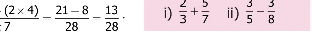

<!DOCTYPE html>
<html lang="en">
<head>
<meta charset="UTF-8">
<meta name="viewport" content="width=device-width,initial-scale=1">
<title>1.3 Addition and Subtraction of Unlike Fractions — Fractions</title>
<meta name="description" content="Class 6 Mathematics · Term 3 · Fractions · 1.3 Addition and Subtraction of Unlike Fractions">
<link rel="icon" href="data:image/svg+xml,<svg xmlns='http://www.w3.org/2000/svg' viewBox='0 0 100 100'><text y='.9em' font-size='90'>📘</text></svg>">
<link rel="stylesheet" href="../../../assets/book.css">
<link rel="stylesheet" href="https://cdn.jsdelivr.net/npm/katex@0.16.11/dist/katex.min.css" crossorigin="anonymous">
</head>
<body>
<header class="topbar">
<div class="topbar-in">
  <div class="crumb">
    <span class="c1"><a href="../../../index.html">Library</a> · <a href="../../index.html">Class 6 Mathematics · Term 3</a></span>
    <span class="c2">Fractions · 1.3 Addition and Subtraction of Unlike Fractions</span>
  </div>
  <a class="tb-btn" data-nav="prev" href="../../01-fractions/03-comparison-of-unlike-fractions-1.2/index.html" title="1.2 Comparison of Unlike Fractions">←</a>
  <details class="drawer"><summary class="tb-btn" title="Sections in this chapter">☰</summary>
<div class="drawer-panel"><div class="dh">Fractions</div><a href="../01-chapter-opener/index.html">Chapter opener</a><a href="../02-intr7odu28ction-48-8-1.1/index.html">1.1 Intr7odu28ction 48 8</a><a href="../03-comparison-of-unlike-fractions-1.2/index.html">1.2 Comparison of Unlike Fractions</a><a href="../04-addition-and-subtraction-of-unlike-fractions-1.3/index.html" aria-current="page">1.3 Addition and Subtraction of Unlike Fractions</a><a href="../05-improper-and-mixed-fractions-1.4/index.html">1.4 Improper and Mixed Fractions</a><a href="../06-addition-and-subtraction-of-mixed-fractions-1.5/index.html">1.5 Addition and Subtraction of Mixed Fractions</a><a href="../07-multiplication-of-fractions-1.6/index.html">1.6 Multiplication of Fractions</a><a href="../08-division-of-fractions-1.7/index.html">1.7 Division of Fractions</a><a href="../09-ict-corner/index.html">ICT CORNER</a><a href="../10-exercise-1.1/index.html">Exercise 1.1</a><a href="../11-miscellaneous-practice-problems/index.html">Miscellaneous Practice problems</a><a href="../12-summary/index.html">Summary</a></div></details>
  <a class="tb-btn" data-nav="next" href="../../01-fractions/05-improper-and-mixed-fractions-1.4/index.html" title="1.4 Improper and Mixed Fractions">→</a>
  <button class="tb-btn" data-theme-toggle title="Toggle light / dark" aria-label="Toggle light or dark theme">◐</button>
</div>
<div class="progress"><span style="width:8.7%"></span></div>
</header>
<main class="wrap">
<div class="sec-head">
  <p class="eyebrow"><a href="../index.html">Chapter 1 · Fractions</a></p>
  <h1>1.3 Addition and Subtraction of Unlike Fractions</h1>
  <p class="sec-meta">Textbook pages 7–10 · 5 figures</p>
</div>
<article class="prose">
<p>Think about the situation</p>
<p>Venkat went to buy milk. He bought \(\frac{1}{2}\) litre first and then he bought \(\frac{1}{4}\) litre. He wanted to find how much milk he bought altogether? In order to find the total quantity of milk, he has to add \(\frac{1}{2}\) and \(\frac{1}{4}\) . That is \(\frac{11}{24} ^{+}\) . To add or subtract two unlike fractions, first we need to convert them into like fractions.</p>
<p>Example 5 The teacher had given the same situation mentioned above and asked</p>
<p>two students Ravi and Arun to solve it. They came out with the answers</p>
<div class="mathblock"><p>for \(\frac{11}{24} ^{+}\) .</p></div>
<h4 class="callout-h" id="s-solution">Solution</h4>
<figure class="fig table-fig wide"></figure>
<p>The teacher concludes that Arun’s way is correct. This can be verified by the following diagram.</p>
<p>\(\frac{2}{4} + \frac{1}{4} = \frac{3}{4}\) In the above illustration note that while adding two like fractions the total number of</p>
<p>parts (denominator) remains the same and the two shaded parts (numerator) are added. Example 6 Add \(\frac{2}{3}\) and \(\frac{3}{5}\) .</p>
<p>Solution These are unlike fractions, aren’t they ? So first we need to convert them into</p>
<p>like fractions ? Is it possible ? Yes, always. How do we do so ? The common multiple of 3 and 5 is 15. Hence, we find the equivalent fractions of \(\frac{2}{3}\) and \(\frac{3}{5}\) with denominator 15.</p>
<div class="mathblock"><p>\(\frac{22 \times 510}{33 \times 515} \frac{33 \times 39}{55 \times 315}\)</p></div>
<p>\(= = = =\)</p>
<div class="mathblock"><p>\(2 + 3 = 10 + 9 = 19\)</p></div>
<p>In the above example, the common denominator is \(15 (3 \times 5)\). Now we observe that the numerator and denominator of the first fraction is multiplied by 5 which is the denominator of the second fraction. In the same way, the second fraction is multiplied by 3 which is the denominator of the first fraction. Now in finding the numerator of both the like fractions, we need to multiply the numerator of the first fraction by 5 and the numerator of the second by</p>
<ul class="qlist">
<li><span class="mk">3.</span><span class="lt">In the denominator, \(3 \times 5\) and \(5 \times 3\) are of course the same. Thus, the technique of finding</span></li>
</ul>
<p>the like fraction is called Cross Multiplication technique.</p>
<div class="mathblock"><p>\(2 + 3 = (2 \times 5) + (3 \times 3) = 10 + 9 = 19\) That is \(3 5 3 \times 5 15 15\)</p></div>
<p>Example 7 Simplify : \(\frac{32}{73}\)</p>
<p>Solution By Cross Multiplication technique, \(_{7}^{3} + ^{2}_{3} = ^{(}^{3} \times ^{3}_{7}^{)} ^{+} \times _{3}^{(}^{2} \times ^{7}^{)} = ^{9} ^{+}_{21}^{14} = ^{23}_{21}\) .</p>
<p>Think about the situation</p>
<p>Vani has \(\frac{3}{4}\) litre of water in her bottle. She drank \(\frac{1}{2}\) litre of it. How much water is left in the bottle? To find the amount of water remaining in her bottle, the amount of water consumed by her must be subtracted from the amount of water she had initially. That is \(\frac{31}{42} ^{-}\) . This is solved in the following example. Example 8 Simplify: \(\frac{31}{42} ^{-}\) Solution Common multiple of 2 and 4 is 4</p>
<p>Equivalent fraction of \(\frac{1}{2}\) is</p>
<div class="mathblock"><p>\(\frac{11 \times 22}{22 \times 24}\)</p></div>
<p>\(= =\)</p>
<div class="mathblock"><p>\(3 - 1 = 3 - 2 = 3 - 2 = 1\)</p></div>
<p>Now, 4 2 4 4 4 4</p>
<p>Therefore, Vani has \(\frac{1}{4}\) amount of water in the bottle. This can be verified by the following diagram.</p>
<p>\(\frac{3}{4} - \frac{2}{4} = \frac{1}{4}\) Example 9 Find the difference between \(\frac{3}{4}\) and \(\frac{2}{7}\) . Solution To find the difference, first we should know, which is bigger between the two</p>
<p>given fractions ? How do we find out ? We know that comparing 'like' fractions is easy, but these are unlike fractions. So, let us convert them into 'like' fractions and compare. Again, we use common multiple \(28 (4 \times 7)\) to get equivalent fractions of \(\frac{3}{4}\) and \(\frac{2}{7}\) as \(\frac{21}{28}\) and \(\frac{8}{28}\) . Here, \(\frac{21}{28} &gt; \frac{8}{28}\) and hence \(\frac{32}{47} &gt;\) .</p>
<div class="mathblock"><p>Therfore, \(3 - 2 = 21 - 8 = 13\) .</p></div>
<p>This can also be done by Cross Multiplication</p>
<div class="mathblock"><p>technique as \(43 - 72 = (3 \times 74) - \times (2 \times\) ) \(= - =\) .</p></div>
<figure class="fig"></figure>
<figure class="fig table-fig wide"></figure>
<p>a mixed fraction by dividing the numerator by denominator to get</p>
<p>quotient and remainder. Thus, any mixed fraction can be written as Quotient + Remainder = Quotient Remainder . Divisor Divisor</p>
<p>Another way to share these idlis is as follows: Now can you see how many halves are there in 5 idlis. There are 10 halves. If we share these \(\frac{1}{2}\) idlis each time, then Iniyan and Abdul has eaten 5 halves each. That is \(^{2}^{1}_{2} = ^{2} ^{+} ^{1}_{2} = ^{(}^{2} \times ^{2}_{2}^{)} ^{+}^{1} = ^{5}_{2}\) . Thus, any improper fraction can be written as mixed fraction as follows \(^{1}^{2} ^{+} ^{1}^{2} ^{+} ^{1}^{2} ^{+} ^{1}^{2} ^{+} ^{1}^{2} = ^{5}^{2}\) which is same as (Whole number X Denominator) + Numerator Improper fraction = Denominator .</p>
<figure class="fig table-fig wide"></figure>
</article>
<nav class="pager"><a class="" data-nav="prev" href="../../01-fractions/03-comparison-of-unlike-fractions-1.2/index.html"><span class="dir">← Previous</span><span class="t">1.2 Comparison of Unlike Fractions</span><span class="ch">Fractions</span></a><a class="nx" data-nav="next" href="../../01-fractions/05-improper-and-mixed-fractions-1.4/index.html"><span class="dir">Next →</span><span class="t">1.4 Improper and Mixed Fractions</span><span class="ch">Fractions</span></a></nav>
</main><footer class="site">Generated from the source textbook PDFs · text, figures and exercises belong to their respective publishers.</footer><script defer src="https://cdn.jsdelivr.net/npm/katex@0.16.11/dist/katex.min.js" crossorigin="anonymous"></script>
<script defer src="https://cdn.jsdelivr.net/npm/katex@0.16.11/dist/contrib/auto-render.min.js" crossorigin="anonymous"
  onload="renderMathInElement(document.body,{delimiters:[
    {left:'\\(',right:'\\)',display:false},
    {left:'$$',right:'$$',display:true},
    {left:'\\[',right:'\\]',display:true}],throwOnError:false,ignoredTags:['script','noscript','style','textarea','pre','code']})"></script>
<script src="../../../assets/book.js"></script>
<script defer src="../../../../assets/search.js?v=1789782769"></script>
<script defer src="../../../../assets/screenshot.js?v=1789782769"></script>
</body>
</html>
